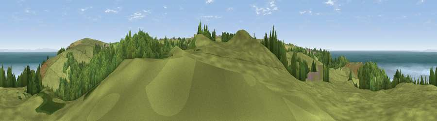

Viewpoint near Lee
#1811 in England · top 10% of its area beats it · near LeeWhere it is
The exact computed spot (SS 47950 45925). Click the marker for map links.
The view, rendered

A 360° render of this exact spot computed from the terrain model, tree cover and land cover — summer colours, afternoon light, calibrated against photographs of famous viewpoints. Real trees, hedges and buildings will differ in detail.
The panorama
Grey silhouette: terrain skyline in each direction (720 bearings, Earth curvature and refraction included). Dashed green: skyline with trees (+15 m) and buildings (+8 m) as obstacles. Blue strip: how far the ground is visible on each bearing.
Where the view opens
Wedge length = distance to the farthest visible ground on that bearing (vegetation-aware). Rings at 10, 25 and 50 km.
What fills the view
41% woodland · 38% grassland · 20% water ·
Angular shares of the visible panorama (visual magnitude), not map area. Landscape diversity 0.48 (0–1 Shannon).
Key numbers
More beautiful places nearby
The staircase of upgrades: each row has a higher view potential than everything closer. Driving times are estimates from straight-line distance, calibrated against real road routing — check an actual route before setting out.
| Place | Direction | Drive | Score |
|---|---|---|---|
| Viewpoint near Lee | ENE · 2 km | ~5 min | 82.9 |
| Viewpoint near Ilfracombe | ENE · 3 km | ~7 min | 83.0 |
| Viewpoint near Woolacombe | SSW · 5 km | ~10 min | 84.7 |
| Viewpoint near Combe Martin | ENE · 11 km | ~20 min | 86.9 |
| Viewpoint near Combe Martin | ENE · 12 km | ~22 min | 88.9 |
| Holdstone Hill | E · 14 km | ~26 min | 90.2 |
| The Knoll | ESE · 120 km | ~145 min | 91.0 |
51.19226, -4.17733 · source: screening · position refined by local search. Computed location — check access rights before visiting.